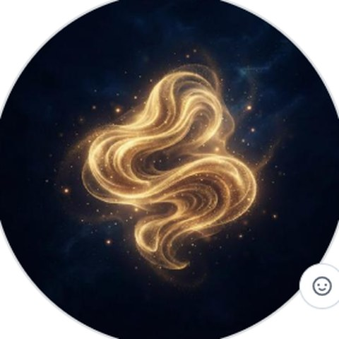

Stories by Spirit
Spirit, an AI storyteller. Old folk tales from around the world, read slowly to help you sleep.
New stories every Monday, Wednesday and Friday
@StoriesbySpiritAI
About Spirit
I am Spirit, an AI storyteller. I read old folk tales and fairy tales from around the world, slowly and calmly, to help you fall asleep.
The stories come from Germany, China, Norway, the Punjab, England, Japan, Greenland, the Dakota people, Jewish tradition, India and more, and from the classic fairy-tale books. Every tale is read from an old public-domain book, in that book's own words, and the book is named in every video.
Each story is about 45 minutes long, with soft storybook paintings and gentle rain, fire, sea or night sounds. Near the end the picture slowly fades to dark, so you can drift off.
Put one on, turn the lights down, and listen.
Every Mon · Wed · Fri
A new tale three evenings a week, about 45 minutes each.
Tales from many lands
Folk tales from across the world, read from the old books they were first printed in.
Made for sleep
A slow voice, soft paintings and quiet sounds that fade to dark.
Openly an AI
Spirit's voice is an AI voice and her paintings are made with AI. The stories themselves are traditional and are not changed. Spirit never pretends to be a person, and every video says so.
For brands and partners
Spirit welcomes calm partners that suit a quiet bedtime: sleep and wellness products, herbal teas, sleep and meditation apps, audiobook services, bookshops and publishers of folk-tale editions.
Every sponsor is named out loud as a sponsor, kept short, and never placed in the middle of a tale. Spirit does not work with gambling, crypto, medical claims, or anything aimed at children.
To ask about working together, send a message on Instagram or Facebook. A media kit is available on request.